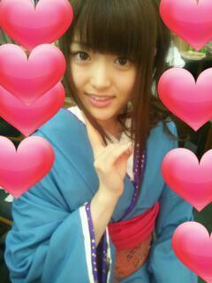

2012/0415Sunろまんっ(o・・o)
こんばんごっ(o・・o)
さゆりんごっ(o・・o)
急に質問返し〜(*´ー｀*
Ｑ、お笑い好き？芸人さんは誰がすき？
Ａ、お笑い好きよ〜＼(^^)／
吉本よう観てた〜
芸人さんはバナナマンさんは
すごい優しいし、面白いから好きです〜( *・ω・)ノ
あと
中川家さんが、めっちゃ好きやねん〜＼(^^)／
Ｑ、好きなお茶は？
Ａ、ジャスミンティー好きです！
けど家は黒烏龍茶！
ルイボスティーってなんですかっ！？
Ｑ、サッカーの試合みにいく!?
Ａ、高校がサッカー強かったから
応援でいったよ〜o(*⌒―⌒*)o
けどいつもは
家でみるばっかりやったな〜(´；ω；`)
Ｑ、男性の身長について！
Ａ、身長についての質問が
多かったのです！
低い人どうですか？とか
高い人こわい？とか！
松村は高いも低いも
関係ないと思いますよ〜o(*⌒―⌒*)o
女の子って男性の身長が
どうこう言いながら
結局あんま気にしてへん気がする〜
ほんまに〜ヽ(・∀・)ノ
自分の身長に自信もって！
身長５センチとか
３メートルとかやったら
さすがにうろたえるけど...
いや、３メートルあったら
肩車してもらったら楽しそうやな！
ありかも！(￣▽￣)b
Ｑ、握手会いってもいい？
Ａ、カモーン！
さゆりんに会いに来てくださいませっ( *・ω・)ノ
いっぱいお話しよな〜o(*⌒―⌒*)o
自分で言うのもなんやけど
さゆりんそんなこわい人ちゃうと思うし
気軽に会いに来てな〜＼(^^)／
って遠い人は
なかなか難しいよな〜(´；ω；`)
全国いろんなとこ行けるように
さゆりん達頑張るなー（つд；*)
Ｑ、大阪のおすすめは？
Ａ、梅田の百貨店とか〜
買い物やったら
難波がおすすめやな〜＼(^^)／
ユニバも新しいやつ出来たらしいしな〜(*´ー｀*)
海遊館はめっちゃ行ってた！
Ｑ、着てみたいスポーツのユニフォームは？
ビーチバレー！
ってのは嘘で
剣道とか柔道かな〜o(*⌒―⌒*)o
絶対にあえへんやろけどね〜（つд；*)
Ｑ、香水なに使ってる!?
Ａ、あんね〜
CANMAKEさんの
ストロベリーなんたらって
ゆうやつ〜＼(^^)／
めっちゃ苺のええにおいするねん〜(*´ー｀*)
ピンクのハートのビンで
普通の薬局やさんの
化粧品売り場とかに置いてる〜(*´ー｀*)
めっちゃ好きで
こればっかり買ってるねん〜(*´ー｀*)☆
Ｑ、ズボンのブーツインあり？
Ａ、さゆりんは
全然ありやと思うで〜＼(^^)／
逆にあかん理由がわからん〜
Ｑ、さゆりんごの技の種類は？
Ａ、実は結構あるんよ〜o(*⌒―⌒*)o
さゆりんごぱんち
さゆりんごきっく
さゆりんごあっぱー
さゆりんごちょっぷ
さゆりんごびーむ
さゆりんごうぃんく
そして必殺！さゆりんごびんた！！！
痛くしやんけどww
うん。
まだまだ修行中の身やから
増えるんよ〜
しつこいとか
言わんでな〜(´；ω；` )
急に質問返ししましたー＼(^_^)(^_^)／
まっちゅん風邪ひいたんよ〜
今日はオフやったので
１日寝てました〜(*´ー｀*)
アンダーのみんな
おつかれさま〜o(*⌒―⌒*)o
皆が頑張ってるときに
寝ててごめんって感じやわね。
明日もお仕事や〜！
今日で治るように大っ嫌いな
粉薬飲むぞー(´；ω；`)！
ほなら、またね♪
おやすみんご♪
あっ！
さゆりんの乃木坂浪漫どうでした？
感想待ってます!!
へばなっ☆
2012/04/15 01:06
コメント(448)
着物がかわいかった
最初に見たときを思い出しましたｗ
最初に見たときを思い出しましたｗ
おいでｼｬﾝﾌﾟｰのＰＶを
フルでみたんだけど
その時の松村が
めっちゃ輝いてみえた＼(^o^)／
全握いこーかな(^_^)v:
ちょっと身長3メートルの人探してくるわ←
さゆりんごびんたは痛そうやな(笑)
浪漫みたよー
さゆりんかわいいーーー
和風なさゆりんもいいねっ！
さゆりんごびんたは痛そうやな(笑)
浪漫みたよー
さゆりんかわいいーーー
和風なさゆりんもいいねっ！
&ezF38D;さーん(笑)
コメント4回目?
( ´艸｀)
さゆりんごは技をたくさんもってるんだねー
こんど
さゆりんごウインクしてー
(/ω＼*)
おいでシャンプーの
ダンス楽しそう♪
さゆりんごは
得意科目はなんだったー?
自分は化学!
おやすみー
コメント4回目?
( ´艸｀)
さゆりんごは技をたくさんもってるんだねー
こんど
さゆりんごウインクしてー
(/ω＼*)
おいでシャンプーの
ダンス楽しそう♪
さゆりんごは
得意科目はなんだったー?
自分は化学!
おやすみー
初コメです
乃木どこ?
がめっちゃおもろいのもバナナマンさんのおかげもあるしすごいですよね
海遊館!!
小学校時代遠足でいきましたーヽ(￣▽￣)ノ
さゆりんのレーン行ってみたいです
では、またコメします＼(^o^)／
西さん
さゆりんごこんばんわー(o^^o)
さゆりんご中川家好きなんやー！！
俺もめちらゃくちゃ好きやねん＼(^o^)／
気合うな！笑
あと、次のシングルの個別大阪行くよー☆
さゆりんご中川家好きなんやー！！
俺もめちらゃくちゃ好きやねん＼(^o^)／
気合うな！笑
あと、次のシングルの個別大阪行くよー☆
急に質問返しいいねｗｗ
別にどうでもいいけど小さい頃「りんご」のこと「ごんご」って言ってたみたいｗ
では、(○´ω`○)ﾉ**SeeYou**(○´ω`○)ﾉ
別にどうでもいいけど小さい頃「りんご」のこと「ごんご」って言ってたみたいｗ
では、(○´ω`○)ﾉ**SeeYou**(○´ω`○)ﾉ
浪漫の感想書くの忘れてた(^J^)
浪漫ね！
関西弁は朗読不利なのかなぁ～って
思ったけど、めっちゃうまかったよ！
では。
夫婦善哉最高や！
めっちゃ可愛かったし内容も食べ物wさゆりんらしかった(≧∀≦)!!
録画したやつ何回も見ちゃってる!!
さゆりんごビンタwwファンにぶちかましちゃえ!!
明日も頑張っO(><)O
おやすみんごっ(o^_^o)
めっちゃ可愛かったし内容も食べ物wさゆりんらしかった(≧∀≦)!!
録画したやつ何回も見ちゃってる!!
さゆりんごビンタwwファンにぶちかましちゃえ!!
明日も頑張っO(><)O
おやすみんごっ(o^_^o)
さゆりんごうぃんくされたら
絶対あきませんね。
まさに必殺技ですやんか！
広島だから乃木浪漫見れねー！
和服めっさめさ似合う！
大阪個別は和服でおねがい！！
へばなパクリ
うけました！
生駒ちゃんに了承済みですか？
絶対あきませんね。
まさに必殺技ですやんか！
広島だから乃木浪漫見れねー！
和服めっさめさ似合う！
大阪個別は和服でおねがい！！
へばなパクリ
うけました！
生駒ちゃんに了承済みですか？
こんばんご☆
今日も1日おつかりんご☆
本間に急やなぁ質問返し☆
僕もさゆりんに何質問したか覚えてないわ(^^)笑
バナナマンさんはいいよね♪
日村さん可愛いわぁ(笑)
僕お茶めっちゃすっきゃねん!!
ジャスミンティー上手いやんなぁ♪
黒烏龍茶も体に良いしね(^^)
ルイボスティー!?
なんてダンディな名前!!笑
桐蔭はスポーツ何でも強いからなぁ
それに比べて大和田わ(@_@)笑
さゆりんの必殺技を今度大阪で全部くらいに行くわ♪笑
何が1番聞くかなぁ
うぃんく…
と見せかけてチョップでしょ(^^)笑
さゆりん風邪ひいたん大丈夫かいなぁ(>_<)
あっさゆりんの乃木坂浪漫みたいのに
大阪やってないよ
なんでなんよ～
さゆりん何とかしてよぅ(~o~)
明日お仕事頑張って！！
また更新待ってるね♪
おやすみんご☆
今日も1日おつかりんご☆
本間に急やなぁ質問返し☆
僕もさゆりんに何質問したか覚えてないわ(^^)笑
バナナマンさんはいいよね♪
日村さん可愛いわぁ(笑)
僕お茶めっちゃすっきゃねん!!
ジャスミンティー上手いやんなぁ♪
黒烏龍茶も体に良いしね(^^)
ルイボスティー!?
なんてダンディな名前!!笑
桐蔭はスポーツ何でも強いからなぁ
それに比べて大和田わ(@_@)笑
さゆりんの必殺技を今度大阪で全部くらいに行くわ♪笑
何が1番聞くかなぁ
うぃんく…
と見せかけてチョップでしょ(^^)笑
さゆりん風邪ひいたん大丈夫かいなぁ(>_<)
あっさゆりんの乃木坂浪漫みたいのに
大阪やってないよ
なんでなんよ～
さゆりん何とかしてよぅ(~o~)
明日お仕事頑張って！！
また更新待ってるね♪
おやすみんご☆
さゆりん、風邪大丈夫？早く、治ってください♪
乃木坂浪慢の感想は、さゆりんに夢中になりすぎて、話しの内容が入ってこなかった(^-^)
さゆりん、着物似合ってたよー
明日からの仕事頑張ってねー！
さゆりん、最後に質問です。握手会の時、さゆりんごうぃんく頼んでいい？
乃木坂浪慢の感想は、さゆりんに夢中になりすぎて、話しの内容が入ってこなかった(^-^)
さゆりん、着物似合ってたよー
明日からの仕事頑張ってねー！
さゆりん、最後に質問です。握手会の時、さゆりんごうぃんく頼んでいい？
初コメです(＾＾)
乃木坂浪漫とても良くて、出ていたメンバーの中で一番引き込まれました♪声のトーン、しゃべる速度、話の内容もよくてドキっとしたりもしました。
ほんわかしていて和みました♪録画しているので何度も再生してみてます(＾＾)♪
乃木坂浪漫とても良くて、出ていたメンバーの中で一番引き込まれました♪声のトーン、しゃべる速度、話の内容もよくてドキっとしたりもしました。
ほんわかしていて和みました♪録画しているので何度も再生してみてます(＾＾)♪
☆☆☆
さゆりん大丈夫？？
しっかり休んでや～
大阪握手会ででさゆりんに会いに行くわ～！！
さゆりんご～シリーズ生で見たいな☆
乃木坂浪漫見たよ！！
和服がめっちゃ似合っててよかったし、
声も聞きやすくてGOODやったし、
大阪弁のイントネーションがかわいかったで！！
さゆりんファイト！！
さゆりん大丈夫？？
しっかり休んでや～
大阪握手会ででさゆりんに会いに行くわ～！！
さゆりんご～シリーズ生で見たいな☆
乃木坂浪漫見たよ！！
和服がめっちゃ似合っててよかったし、
声も聞きやすくてGOODやったし、
大阪弁のイントネーションがかわいかったで！！
さゆりんファイト！！
そっきゃー風邪ひきさんどすか～（笑）(゜▽゜)！(＾＾)！ちっくとついてなかった
ですね～～(゜▽゜)画のさゆりんごも可愛いらしい撮られ方でやんすよ～(゜▽゜)o(^-^)o
そうか元が関西弁な作品だったんですね～～一瞬読み替えてるのかと（笑）思ったり
でしたわにー！(＾＾)！o(^-^)oにしても、海遊館ね～。一回もなかったりします～～
まあ、今は行くこと自体が遠かったりしますけどね～(゜▽゜)o(^-^)oさゆりんごビンタ
ってイベントでオーダー多そうでやんすね～～(゜▽゜)o(^-^)oそのうち映像とかで
マジでやんなきゃなシーンがくるかもでやんすよ～。うんうん。
ですね～～(゜▽゜)画のさゆりんごも可愛いらしい撮られ方でやんすよ～(゜▽゜)o(^-^)o
そうか元が関西弁な作品だったんですね～～一瞬読み替えてるのかと（笑）思ったり
でしたわにー！(＾＾)！o(^-^)oにしても、海遊館ね～。一回もなかったりします～～
まあ、今は行くこと自体が遠かったりしますけどね～(゜▽゜)o(^-^)oさゆりんごビンタ
ってイベントでオーダー多そうでやんすね～～(゜▽゜)o(^-^)oそのうち映像とかで
マジでやんなきゃなシーンがくるかもでやんすよ～。うんうん。
さゆりんごやっぱかわえぇなぁ！！
てか、さゆりんごうぃんくって何？今度くらいたいな～。
浪漫も何回もみましたよ！
朗読はいまいちやね！！(笑)
でもカワイイから許しちゃうよ！
また早めに更新してね！
でわ！！
てか、さゆりんごうぃんくって何？今度くらいたいな～。
浪漫も何回もみましたよ！
朗読はいまいちやね！！(笑)
でもカワイイから許しちゃうよ！
また早めに更新してね！
でわ！！
乃木坂浪漫見ました
毎晩毎晩寝る前に一度は聞いてます。
次回の放送も楽しみにしてます。
毎晩毎晩寝る前に一度は聞いてます。
次回の放送も楽しみにしてます。
さゆりんは柳吉みたいなんどぉ思う？
ど、ど、ど、ど、どや？←
てかさゆりん綺麗すぎて鼻血出たで(笑)
て、て、て、て、てか風邪大丈夫？
念送っとくから←
ぬぬぬぬぬ←
んじゃ、今度うぃんくとびんたヨロシクな♪
お大事に!!
ど、ど、ど、ど、どや？←
てかさゆりん綺麗すぎて鼻血出たで(笑)
て、て、て、て、てか風邪大丈夫？
念送っとくから←
ぬぬぬぬぬ←
んじゃ、今度うぃんくとびんたヨロシクな♪
お大事に!!
さゆりん、風邪大丈夫!?ムリしないでね、苦い薬ちゃんと飲むんだよ(T_T)
中川家さんめっちゃ面白いよね(>_<) 韓国の焼き肉屋のおばちゃんのまねがさいこーヾ(^▽^)ノ
あー、たぶん香水は妹が買い占めてくるだろうな(￣ー￣) どんなのか楽しみ!!
浪漫みたよー!!ってまえにも書いたかも!? もう何回かみてるよ(^-^)v 食べてるときのさゆりんてほんといい表情するよねヽ(´ー｀)ノ
そして今度さゆりんごウインクしてもらおっと!!
dai
中川家さんめっちゃ面白いよね(>_<) 韓国の焼き肉屋のおばちゃんのまねがさいこーヾ(^▽^)ノ
あー、たぶん香水は妹が買い占めてくるだろうな(￣ー￣) どんなのか楽しみ!!
浪漫みたよー!!ってまえにも書いたかも!? もう何回かみてるよ(^-^)v 食べてるときのさゆりんてほんといい表情するよねヽ(´ー｀)ノ
そして今度さゆりんごウインクしてもらおっと!!
dai
筋トレやってるなう！
高３のしょーごです(^-^)／
乃木坂浪漫良かったよ！
さゆりん可愛いし
演技もめちゃめちゃ
上手くて最高でした(^O^)
体調には気をつけてね(>_<)
明日のお仕事
頑張ってください！
さゆりんの乃木坂浪漫超良かったよー
着物姿のさゆりんメッチャ可愛かったぁぁぁ
体調悪いのかぁ
ゆっくり休んでね
ではでは～
着物姿のさゆりんメッチャ可愛かったぁぁぁ
体調悪いのかぁ
ゆっくり休んでね
ではでは～
さゆりんの乃木坂浪漫めっちゃよかった！
さゆりんのおっとりした喋り方に酔いしれちゃったよ&sFB42;
僕は東京人なんですが、凄く大阪に憧れてていつも関西弁使ったりしてるんです！最近すんごく大阪行きたくて、夏休みに家族で絶対大阪行きます！
僕は最近乃木坂46ファンになったので、がんばって乃木坂の勉強してますよん！
さゆりんの事最初に見た時なんておっとりしてて可愛らしい人なんだと思い、ファンになりました！今年は絶対イベント参加します！！
最後に質問したいのですが、ケータイはなんの機種使ってますか？
長くなってすみません
さゆりんのおっとりした喋り方に酔いしれちゃったよ&sFB42;
僕は東京人なんですが、凄く大阪に憧れてていつも関西弁使ったりしてるんです！最近すんごく大阪行きたくて、夏休みに家族で絶対大阪行きます！
僕は最近乃木坂46ファンになったので、がんばって乃木坂の勉強してますよん！
さゆりんの事最初に見た時なんておっとりしてて可愛らしい人なんだと思い、ファンになりました！今年は絶対イベント参加します！！
最後に質問したいのですが、ケータイはなんの機種使ってますか？
長くなってすみません
久しぶりんごっ(・∀・)ノっても、昼すぎに前のブログにコメント書いたばっかりやけどなｗｗ
先生は今日、花見してきたわ(^^)v夜桜キレーやった。うん、もちろんさゆりんのがキレーやけどな(≧▼≦)←書いててめっちゃ恥ずかしい
大学の友だちに花見で１年ぶりに会ってんけど、
「めっちゃイケメンなったなぁ」
やて(≧ω≦)照れるわぁ
慢ることなく、自分磨き続けていくよ。てことで、明日はエステ行ってきまーすε=┏( ・_・)┛
先生は今日、花見してきたわ(^^)v夜桜キレーやった。うん、もちろんさゆりんのがキレーやけどな(≧▼≦)←書いててめっちゃ恥ずかしい
大学の友だちに花見で１年ぶりに会ってんけど、
「めっちゃイケメンなったなぁ」
やて(≧ω≦)照れるわぁ
慢ることなく、自分磨き続けていくよ。てことで、明日はエステ行ってきまーすε=┏( ・_・)┛
僕にさゆりんごびんたを打ってください／(・з・)
さゆりんごお疲れ様 乃木坂浪漫みたよ 着物姿きれいだったよ さゆりんごは、どんな味がするのかな？さゆりんごの風邪早く直れ～神様
さゆりんご、こんばんごっ＼(^o^)／
風邪お大事に！早く治るといいね～(´；ω；｀)
乃木坂浪漫見たけどめっちゃよかったよー！
さゆりん、めっちゃ着物姿似合ってた！！
3rdシングルはみんな着物で踊って歌ったらいいのに！
って思ったー＼(^o^)／笑
風邪お大事に！早く治るといいね～(´；ω；｀)
乃木坂浪漫見たけどめっちゃよかったよー！
さゆりん、めっちゃ着物姿似合ってた！！
3rdシングルはみんな着物で踊って歌ったらいいのに！
って思ったー＼(^o^)／笑
乃木坂浪漫見たよ＼(^o^)／
さゆりんの和服可愛いすぎる(*´ω｀*)
さゆりんの和服可愛いすぎる(*´ω｀*)
さゆりんこんばんは(^_^)/
さゆりんごryいっぱいあるんですか!!
ビックリです(((・・;)
さゆりんごビンタ受けてみたいww
そして乃木坂浪漫ですが
さゆりんかわいかったです(^^)v
読み方も感情も上手く入っていて
聞きやすかったです(^-^)/
もっと聞きたい!!
では明日も頑張りましょう！
おやすみなさい(-.-)y-~
さゆりんごryいっぱいあるんですか!!
ビックリです(((・・;)
さゆりんごビンタ受けてみたいww
そして乃木坂浪漫ですが
さゆりんかわいかったです(^^)v
読み方も感情も上手く入っていて
聞きやすかったです(^-^)/
もっと聞きたい!!
では明日も頑張りましょう！
おやすみなさい(-.-)y-~
乃木坂浪漫良かったですよ～～
着物姿のさゆりん超可愛かったよ
特にぜんざい食べてるとことかもう最高！！
大っ嫌いな粉薬飲んで明日からのお仕事頑張って下さい
着物姿のさゆりん超可愛かったよ
特にぜんざい食べてるとことかもう最高！！
大っ嫌いな粉薬飲んで明日からのお仕事頑張って下さい
風邪引いたんか:-)
ゆっくり休んで治しや！
後まっちゃがまっちゅんになってるで(笑)
乃木坂浪漫は大阪やってないから
感想言えんけどとりあえず
浴衣姿めっちゃ綺麗！
握手会で浴衣着るんなしカナ？？
それじゃあおやすみー
お疲れもんf(^_^)
たんたかたん＼(^-^)／
ゆっくり休んで治しや！
後まっちゃがまっちゅんになってるで(笑)
乃木坂浪漫は大阪やってないから
感想言えんけどとりあえず
浴衣姿めっちゃ綺麗！
握手会で浴衣着るんなしカナ？？
それじゃあおやすみー
お疲れもんf(^_^)
たんたかたん＼(^-^)／
こんばんは♪
質問回答ありがとう(*^_^*)
中川家面白いよね！
俺も好き♪
さゆりんの技ありすぎでしょ(笑)
今度やってもらお♪
乃木坂浪漫よかったよ(*^_^*)
さゆりんが可愛すぎて内容入って来なかった(^_^;(笑)
おやすみ♪
質問回答ありがとう(*^_^*)
中川家面白いよね！
俺も好き♪
さゆりんの技ありすぎでしょ(笑)
今度やってもらお♪
乃木坂浪漫よかったよ(*^_^*)
さゆりんが可愛すぎて内容入って来なかった(^_^;(笑)
おやすみ♪
さゆりん！こんばんりん＼(^o^)／
さゆりんごびーむ！またやってもろうかな(笑)
急に質問返しするからびっくりしちゃったよ！
俺まだ質問した事ないから残念…
風邪引いてたのー？だ、大丈夫 超心配
超心配

早く良くなるように祈ってるね(＞人＜;)
乃木坂浪漫良かったよー！！
もう何回も見ちゃってる(笑)
表情とか本当可愛くて素敵だったよd(^^o)
最後に便乗して残します！
-質問-
さゆりんはムチャぶり振られたら対応できる？
じゃまたねーおやすみ( ´ ▽ ` )ﾉ
さゆりんごびーむ！またやってもろうかな(笑)
急に質問返しするからびっくりしちゃったよ！
俺まだ質問した事ないから残念…
風邪引いてたのー？だ、大丈夫
早く良くなるように祈ってるね(＞人＜;)
乃木坂浪漫良かったよー！！
もう何回も見ちゃってる(笑)
表情とか本当可愛くて素敵だったよd(^^o)
最後に便乗して残します！
-質問-
さゆりんはムチャぶり振られたら対応できる？
じゃまたねーおやすみ( ´ ▽ ` )ﾉ
風邪りんごだったのか＞＜
いまいち気温が不安定だからね～・・・
休める時にしっかり休んで治してね＞＜
さゆりんビーム出んのか！ｗ
うぃんくとびんたは今度握手会でやってもらおう笑
乃木坂浪漫、前のブログにちょろっとコメしといたけどもっかい書くね
演出？の人もちゃんとさゆりんのこと理解してて関西弁でいけたり食べ物のことだったりすごい合ってた～
そして何より水色の着物がすっげえええええええ似合ってた
水色着物にキレイな青空に桜の花、そしてさゆりんの笑顔
夜のシーンは大人っぽいクールっぽいさゆりんが見れたし
もう永久保存版だよね！
将来子供ができたら「この女性がお父さんが好きだった人だよ～」って紹介できるくらいさゆりんの良さが出てた！ｗ
ふう・・・つい熱くなってしまったけど（笑）
またああゆう番組とか見れるといいな
着物写メ最高ありがとう
いまいち気温が不安定だからね～・・・
休める時にしっかり休んで治してね＞＜
さゆりんビーム出んのか！ｗ
うぃんくとびんたは今度握手会でやってもらおう
乃木坂浪漫、前のブログにちょろっとコメしといたけどもっかい書くね
演出？の人もちゃんとさゆりんのこと理解してて関西弁でいけたり食べ物のことだったりすごい合ってた～
そして何より水色の着物がすっげえええええええ似合ってた
水色着物にキレイな青空に桜の花、そしてさゆりんの笑顔
夜のシーンは大人っぽいクールっぽいさゆりんが見れたし
もう永久保存版だよね！
将来子供ができたら「この女性がお父さんが好きだった人だよ～」って紹介できるくらいさゆりんの良さが出てた！ｗ
ふう・・・つい熱くなってしまったけど（笑）
またああゆう番組とか見れるといいな
着物写メ最高ありがとう
必殺技がビンタって！w
絶対びーむのほうが強いじゃん！！！
乃木坂浪漫はね～
着物の色が綺麗だったね！w
っていうのは本当で
着物っていいな～とか思いながら見てたよ！w
最後に風邪？しっかり治せよ～
さゆりん風邪大丈夫ですか？
しっかり治してくださいね(´；ω；｀)
乃木坂浪漫も見ました！
とっても良かったですよ(´∀｀)
明日からも頑張りましょうヾ( ´ー｀)
しっかり治してくださいね(´；ω；｀)
乃木坂浪漫も見ました！
とっても良かったですよ(´∀｀)
明日からも頑張りましょうヾ( ´ー｀)
トミーです!!
俺もちょうど今風邪引いてるのよ(°∇°;)
熱が３８ある(泣)
お互い体調管理しっかりしなきゃね!!
俺もちょうど今風邪引いてるのよ(°∇°;)
熱が３８ある(泣)
お互い体調管理しっかりしなきゃね!!
さゆりん、風邪の具合はどうですか～?早く治るように神様にお祈りしとくで～。あと、乃木坂浪漫でのさゆりんみたよ～。あっしもさゆりんとめおとみたいになりた～いとかおもっちゃったよ～。
風邪大丈夫？
ゆっくり休んでや(^-^)/
乃木坂浪漫よかったよ！
着物似合ってたし、
すっごいかわいかった♪( ´▽｀)
じゃあまた仕事頑張ってねー！
ゆっくり休んでや(^-^)/
乃木坂浪漫よかったよ！
着物似合ってたし、
すっごいかわいかった♪( ´▽｀)
じゃあまた仕事頑張ってねー！
.
おこんばんは(。^-^。)
さゆりんは、知らん間に技か増えてんねやで。
おいでシャンプーの振りで、顎に手をあててんのが、髭男爵のひぐちカッターにそっくりやがな。
さゆりんごかった─
追加やな。
.
乃木坂浪漫の感想、前も書いたけど、着物姿がほんま良かったわ。
うなじ見せる感じの着付けもよく似合ってた、いうか私の好きな雰囲気やって嬉しかった。
蝶子感、満載。
.
風邪、気いつけや。
治りかけが、一番用心やで。
格好つけんと移動時はマスク・ヒートテック・ネックウォーマー・腹巻・毛糸の靴下くらいのフル装備で行ってくれ。
多少、不審人物やけどな。
.
ほなら→へばな
生駒がうつっとるね。
.
(。・_・。) アギタ
.
おこんばんは(。^-^。)
さゆりんは、知らん間に技か増えてんねやで。
おいでシャンプーの振りで、顎に手をあててんのが、髭男爵のひぐちカッターにそっくりやがな。
さゆりんごかった─
追加やな。
.
乃木坂浪漫の感想、前も書いたけど、着物姿がほんま良かったわ。
うなじ見せる感じの着付けもよく似合ってた、いうか私の好きな雰囲気やって嬉しかった。
蝶子感、満載。
.
風邪、気いつけや。
治りかけが、一番用心やで。
格好つけんと移動時はマスク・ヒートテック・ネックウォーマー・腹巻・毛糸の靴下くらいのフル装備で行ってくれ。
多少、不審人物やけどな。
.
ほなら→へばな
生駒がうつっとるね。
.
(。・_・。) アギタ
.
さゆりんの着物姿かわいい
へばなは生駒ちゃんの・・・
まあそんなことより質問です、さゆりんが最近はまってる小説って何？ラノベ版とそれ以外(蜩ノ記以外ね前聞いたから )
)
へばなは生駒ちゃんの・・・
まあそんなことより質問です、さゆりんが最近はまってる小説って何？ラノベ版とそれ以外(蜩ノ記以外ね前聞いたから
乃木坂浪漫めっちゃ美人だったよー♪
まじさゆりんごに会いたい
まじさゆりんごに会いたい
更新きてあ・∀・
さゆりんごryとか
もはやネタすぎるｗｗ
さゆりん
こんばんごっ(ο・・ο)
さゆりん
沢山技あるね。
今度
さゆりんごぱんち
してね？
乃木坂浪漫見たよ。
やっぱ
さゆりん
可愛い！
話し方も可愛い！
ますます惚れた(*/ω＼*)
風邪お大事に。
m(_ _)m
こんばんごっ(ο・・ο)
さゆりん
沢山技あるね。
今度
さゆりんごぱんち
してね？
乃木坂浪漫見たよ。
やっぱ
さゆりん
可愛い！
話し方も可愛い！
ますます惚れた(*/ω＼*)
風邪お大事に。
m(_ _)m
俺、柔道やってたからさゆりんの柔道着姿みてみたいな～♪( ´▽｀)
乃木坂浪漫見たよ～( ´ ▽ ` )ﾉ
さゆりんの和服姿に見とれてて、ほとんど朗読が耳に入って来なかったわ笑
あと、あの初詣のくだりが面白かったよ～笑
乃木坂浪漫見たよ～( ´ ▽ ` )ﾉ
さゆりんの和服姿に見とれてて、ほとんど朗読が耳に入って来なかったわ笑
あと、あの初詣のくだりが面白かったよ～笑
さゆりんごばんちゃ(^Q^)/^
ゆーたんなう
浪漫見たよ！
和服いいよね(//∀//)
日本人の特権だしね！！
てか
語り得意でないしょ(;^_^A
あ！
パンチ
チョップ
ウィンク
は経験したから
今度はビンタよろしくね(^.^)b
自分も風邪なんだわ(汗)orz
一緒に早く治そうね！
今日も1日お疲れちゃん(´∀｀)
ぢゃぁ
ゆーたんなう
浪漫見たよ！
和服いいよね(//∀//)
日本人の特権だしね！！
てか
語り得意でないしょ(;^_^A
あ！
パンチ
チョップ
ウィンク
は経験したから
今度はビンタよろしくね(^.^)b
自分も風邪なんだわ(汗)orz
一緒に早く治そうね！
今日も1日お疲れちゃん(´∀｀)
ぢゃぁ
今度さゆりんごの技
全部くらいにいくわ！笑
そして次会ったとき
さゆりに新しい技を
伝授してあげよう(^3^)/
待っててくれぃ(^o^)笑
では、旭川から
なべちゃんでした☆
さっゆり～ん
えっ風邪ひいたの！大丈夫！無理しないでね悪化すると大変だから気を付けてね。早くさゆりんの風邪が治るように祈ってるね！
乃木坂浪漫の感想
着物の色も似合ってたし、さゆりんらしさが出てたんじゃないかな～って思ってるよ＼(^o^)／かっ可愛すぎた。ヤバかった。
さゆりん仕事頑張ってね
さゆりんの風邪が治るように！
へっへばなだと！
じゃあね♪
えっ風邪ひいたの！大丈夫！無理しないでね悪化すると大変だから気を付けてね。早くさゆりんの風邪が治るように祈ってるね！
乃木坂浪漫の感想
着物の色も似合ってたし、さゆりんらしさが出てたんじゃないかな～って思ってるよ＼(^o^)／かっ可愛すぎた。ヤバかった。
さゆりん仕事頑張ってね
さゆりんの風邪が治るように！
へっへばなだと！
じゃあね♪
こんばんわんこそばんそーこー(^-^)/
さゅりん…
かわいすぎやろーーー!!!
テレビ東京はこっちではうつらんのです…しくしく泣
乃木坂全国進出待ってますよー♪
ずっと応援してます♪
でわ(・∀・)ゞ
さゅりん…
かわいすぎやろーーー!!!
テレビ東京はこっちではうつらんのです…しくしく泣
乃木坂全国進出待ってますよー♪
ずっと応援してます♪
でわ(・∀・)ゞ
さゆりんこんばんは♪
風邪引いてたんだ⁉
体調管理しっかりね(^_-)
乃木坂浪漫もちろんみたよ♪
むっちゃえぇやん！
標準語大丈夫かなぁ～と思ってたら
普通に内容関西だったのねぇ～(￣ー￣)
真の部分で繋がってる夫婦感が
さゆりんの朗読で伝わったよ♪
着物さゆりん雅やぁ～(｡-_-｡)


明日もお仕事がんばってください＾＾